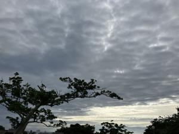
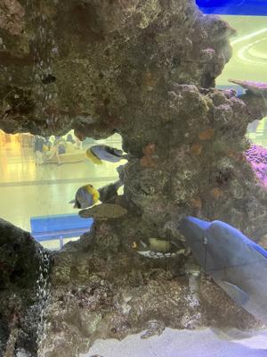
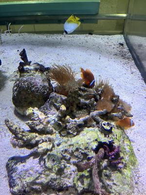
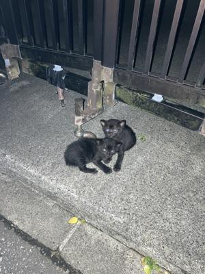

うるがいの話 ある日
最新: 物件の進捗【うるがいの話 ある日】とは 一日だけのプログです
『うるがいの話』の最新一日だけのプログで、通信料が少なく経済的だ。カニの画像をクリックすると全ての日付が載る『うるがいの話』サイトを表示します
|
|
【うるがいの話】 うるがい(ｳﾙｶﾞｲ urugai)とは、『もずくがに』の名前でとても大きくなります。 |
|---|---|
|
|
【カミマヤーの話】 猫のことを方言でマヤーといいます。カミマヤー（kamimayaa）とは、神の猫のことです。 |
|
【たながぁの音楽】 たながぁ（ﾀﾅｶﾞｰ tanagaa）とは手長えびのことで、何種類かあり大きいのは車 エビぐらいになります。 |

|
【ぶながぁの話】 ぶながぁ(ﾌﾞﾅｶﾞｰ bunagaa)とは、赤い髪の毛、赤い身体、そして身長は１ｍ２０ｃｍ ぐらい、川の蟹を食べているの目撃された。場所は沖縄県国頭郡大宜味村のと ある村僕の隣近所に住んでいる爺さんから、聞いた話です。 |
|
|
【ギーマの話】 ギーマ(giima)とは、山原の里山に咲くスズランに似た、 花を付けます。実は食べられます、 気が付くと口の周りが紫になっています。 |
2025年06月15日 (日）物件の進捗
16:53

不動産の担当者から、買主と金額の調整を終え契約の手続きの入り
ました、月末までには契約できる見込みですと連絡があった。オー
ところで、消費税はかかるのだろうか？、金額が大きいので１０％
だと大変だ、今まで消費税の話は一切なかったが、ネットで調べた
ら、かからないらしい。
夜、コドモを空港で迎える。７月の話をすると、今月はかなり外国
人が少なくなっていると感じたと言っていた。
２０：３９ 私の胸を傷つけたことがあるモンガラカワハギ

クマノミ

２１：２７ 駐車場の門にいた子猫たち

今朝、駐車場の門の前に停めていた軽自動車を敷地内の奥に停めよ
うとすると子猫たちが、軽自動車のタイヤの近くにうずくまってい
た。仕方なく、手で捕まえて移動する。小さい、可愛い、彼等には
罪はない。